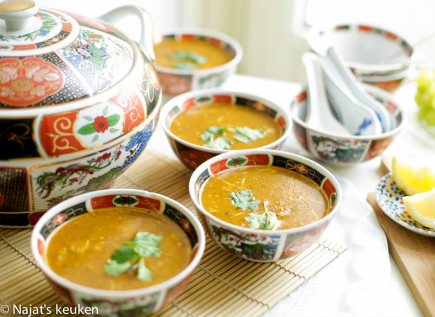

Harira
Wanneer ik aan harira denk ik aan de ramadan De heerlijk aroma’s en fijne structuur Natuurlijk wordt deze traditionele soep het gehele jaar door geserveerd. Heerlijk met dadels, citroen en homemade chebakia. Ongelofelijk rijk aan smaak! Heerlijk zo’n kommetje soep.
Ingrediënten
- 15 ml olijfolie
- 125 g vlees
- 1000 ml water
- 100 g witte ui
- 125 g wortel
- 150 g tomaten
- 75 g selderij
- 60 g verse koriander
- 400 g gepelde tomaten
- 70 g tomatenpuree
- 500 ml water
- 80 g bloem
- 10 g zout
- 14 g ras el hanout
- 3 g komijn
- 1 saffraan
- 1 g zwarte peper
- 62 g groentesoep
- 1 blokje runderbouillon
- 90 g kikkererwten
- 40 g linzen
- 40 g parelcouscous
Bereidingswijze
- Snij eerst alles in stukjes
- Verhit de olijfolie in een pan en voeg gehakt, vlees en zout toe. Kook 5 tot 7 minuten.
- Giet 500 ml water in een blender en voeg de wortels en uien toe. Blend dit niet al te fijn. Voeg het toe in de pan.
- Giet 500 ml water in een blender en voeg de tomaat, tomatensaus, koriander en selderij toe. Blend niet al te fijn samen. Voeg het weer toe weer toe in de pan.
- Voeg tomatenpuree, ras el hanout, komijn en zwarte peper toe.
- Giet warm water in de blender (500 ml ) en voeg de bloem toe. Blend samen tot een geheel en voeg het weer in de pan.
- Voeg 1,5 liter water toe en kook het op hoog vuur.
- Als het borrelt zet je het vuur laag en voeg je de kikkererwten en linzen toe, zet het vuur weer hoog.
- Wanneer het begint te borrelen voeg je de groentesoep en runderbouillon toe. Roer de groentesoep door middel van een garde samen. Zet het op hoog vuur voor zo’n 10 minuten, daarna zet je het vuur laag. Leg de deksel er nu schuin op. Kook het voor zo’n 60/70 minuten (vergeet niet om de 15 minuten te roeren).
- Voeg de parelcouscous beetje bij beetje toe. Kook nu weer zo’n 15 minuten en zet het vuur dan uit.

Tip Voeg zout toe naar smaak. Gebruik geen deksel tenzij is aangegeven (zie stap 9).